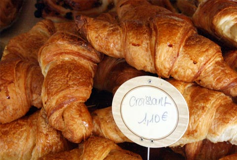

Comida en Paris
La cocina francesa es muy rica y variada gracias a la calidad de las materias primas y a la enorme diversidad cultural que posee Francia.
Platos típico
Estos son algunos de los platos tradicionales de la cocina francesa:
Soupe a l´oignon
Una sopa de cebolla frita con mantequilla y aceite a la que además se le añade el elemento estrella de Francia, el queso gruyere. Es un plato típico ideal para el invierno y además muy sabroso. Pruébala en el restaurante más antiguo de París: Le Procope.

Coq au vin
Un estofado parisino tradicional que se hace con vino tinto o blanco. Para ser más completo, se le añaden verduras como la cebolla y se acompaña con laurel, ajo y un poco de coñac.

Escargots
Que no te parezca extraño comer caracoles, saben mejor de lo que suena. En París este plato típico se prepara con mantequilla, ajo y perejil. Se pasan unos minutos por el horno y listo. Si te gusta probar cosas nuevas, los escargots te encantarán.

Ratatouille
Una comida típica que es una mezcla de verduras: cebolla, berenjena, tomate, calabacín, pimientos. Con un poco de ajo, orégano y aceite es un plato exquisito y muy valorado en París, además de ser bajo en calorías y muy sabroso.

Quiche Lorraine
Tarta salada realizada a base de huevos y nata, además de otros ingredientes como carnes y queso.

Foie gras
Hígado de patos o gansos cebados.

Brioche
Dulce a base de huevos, levadura, leche, mantequilla y azúcar..

Tarte Tatin
Tarta de manzana en la que las manzanas están caramelizadas.

Petit four
Son pastelitos variados, de pasta de hojaldre, de almendra, de crema…

Croissants
Pasta de hojaldre enrollada en forma de media luna y cocida al horno; puede ir rellena de ingredientes dulces o salados.
A modo de curiosidad, los famosos croissants no son originarios de Francia, sino de Austria.
